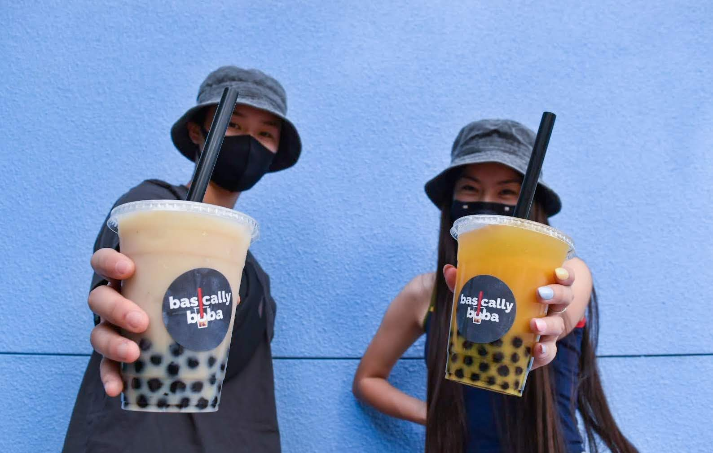
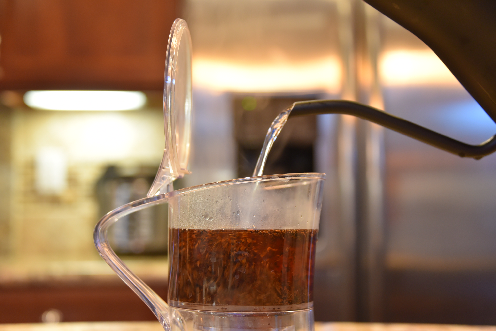
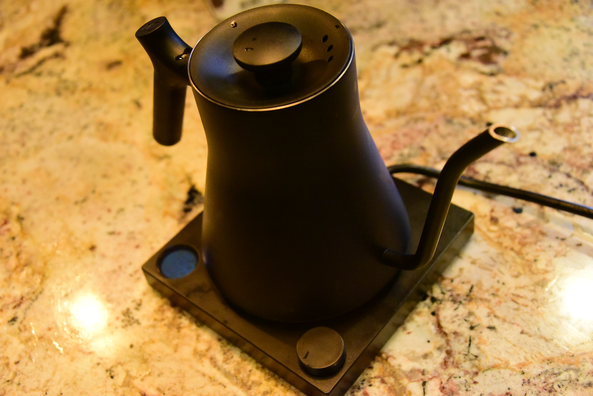
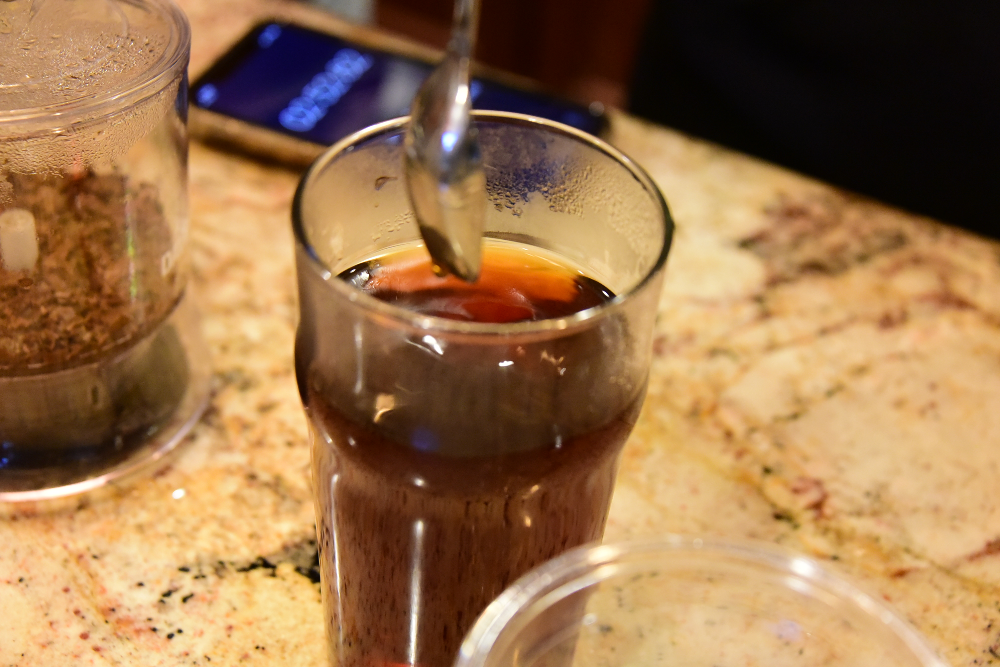

We believe in providing high-quality boba drinks using the healthiest and freshest ingredients; crafted by the best brew. No powders. No syrups. No artificial additives. Basically put, we use premium loose-leaf tea and boba sourced from the highest quality tea vendors from Taiwan.
Sasha and Matthew are two seniors at Amador Valley High School. They first met each other in Japanese class and are now classmates in the wind ensemble band program. Despite their differences in interests, they had one thing to share their love for: boba.
To us and many others, boba is more than a drink. Boba has been a growing staple drink to grab in our community when we want to catch up with a friend or just to reward ourselves after a long day of school.
Throughout our time in Japanese class, we complained over how the local boba shop on the neighboring block of Amador had unhealthy ingredients and wasn’t all that great. As a former employer there, Sasha witnessed firsthand the unhealthy ingredients that made up all the drinks and the often unsanitary conditions inside the shop.
Unfortunately, this isn’t uncommon — many boba shops chose to use cheaper and unhealthier alternatives to flavor their drinks — “fruit” syrups that are 99% high fructose corn syrup, “milk” powder that doesn’t even contain real dairy, and tea leaves reused beyond their capacity just to save some money. As for Matthew, he too noticed and tasted the low-quality drinks through comparing the boba shop to the higher-quality boba shops all over Asia.
We decided that we could do better. We brought together our friends who shared the same passion for boba and decided to challenge the unhealthy stigma associated with boba.
Everybody should have a right to enjoy their drink and shouldn’t have to question what’s in their drink. By using only the freshest and healthiest ingredients imported straight from Taiwan, we hope to create the best version of a drink so loved by ourselves and our community. Above all, we are just here to have fun in the process. We are all glad you are here to join us in this initiative.
— The Basic Crew

Kayli & Phoebe Pictured Above
Bubble tea, or boba, is a Taiwanese tea-based drink invented in Tainan and Taichung in the 1980s. Recipes contain tea of some kind, flavors of milk, and sugar. Toppings, known as "pearls", such as chewy tapioca balls, popping boba, fruit jelly, grass jelly, agar jelly, alovera jelly, sago and puddings are often added.
With the popularization of boba all over the country, epsecially in the Bay Area, many boba shops are choosing to use unhealthier alternatives for profit. These "quick-to-make" boba shops use powders, syrups, and other artificial additives that should not belong in your drink. Unlike other "fast" boba chains around the Bay Area, our small team of bobaristas are committed to developing the ideal beverage for you with consistency in flavor and quality.
Our drinks are free of artificial ingredients and additives. Our products are only from the highest quality vendors from all over the world like Taiwan. Here’s the basic breakdown of what we put in our beverages:
We use premium loose leaf teas sourced from the highest quality tea vendors in the world.
We use half-and-half to mimick that creamy, thick taste that you normally find in an authentic Taiwanese boba shop (for substitutions — oat milk, almond milk, soy milk, etc.)
We use purely natural brown sugar syrups that we crafted for all of our milk teas. No artificial sweeteners.
Even though milk tea seems simple enough to make, there’s actually an art to creating a great quality version of this drink. Contrary to popular belief, it takes a certain amount of effort, attention to detail, and several phases of quality control to produce a smooth and silky milk tea. Here's how we provide a better cup:
Water should always be cold and freshly drawn when preparing tea. Purified or spring water are optimally used since they are free from pollutants and other potential flavor-altering substances, and distilled or pre-heated tap water should generally be avoided. However, it’s still crucial for water to keep some of its natural minerals to produce great-tasting tea. In Asian tradition, water is usually gently boiled to eliminate harmful germs and bacteria. You should keep tea leaf to water ratio in mind for consistency. Green tea, Oolong tea and black tea typically have a 1 to 30 weight proportion.

Preparing water at the correct temperature can either make or break your tea. Water heated to a light and steady roll brings out the best in a tea’s flavor, so be sure not to over-boil to avoid a flat taste. However, water temperature also varies depending on the type of tea you’re making. Certain teas such as green tea needs a cooler temperature (176-185°F/80-85°C) to draw out the ideal flavor, whereas the fully oxidized black tea needs to be steeped in much hotter water (203-212°F/95-100°C) to draw out its sweetness. Luckily, we use the Stagg EKG Electric Kettle for precise temperature control which makes it easy to consistently perfect the brew.

No one likes the taste of over or under-steeped tea. That’s why it’s crucial to understand how long tea leaves should be steeping in water. Although the duration ranges depending on cultures and customer preferences, delicate teas such as green tea generally have shorter brewing times around 8-10 minutes. On the other hand, hearty and earthy black teas with high fermentations are best made with longer brewing times around 15-20.
